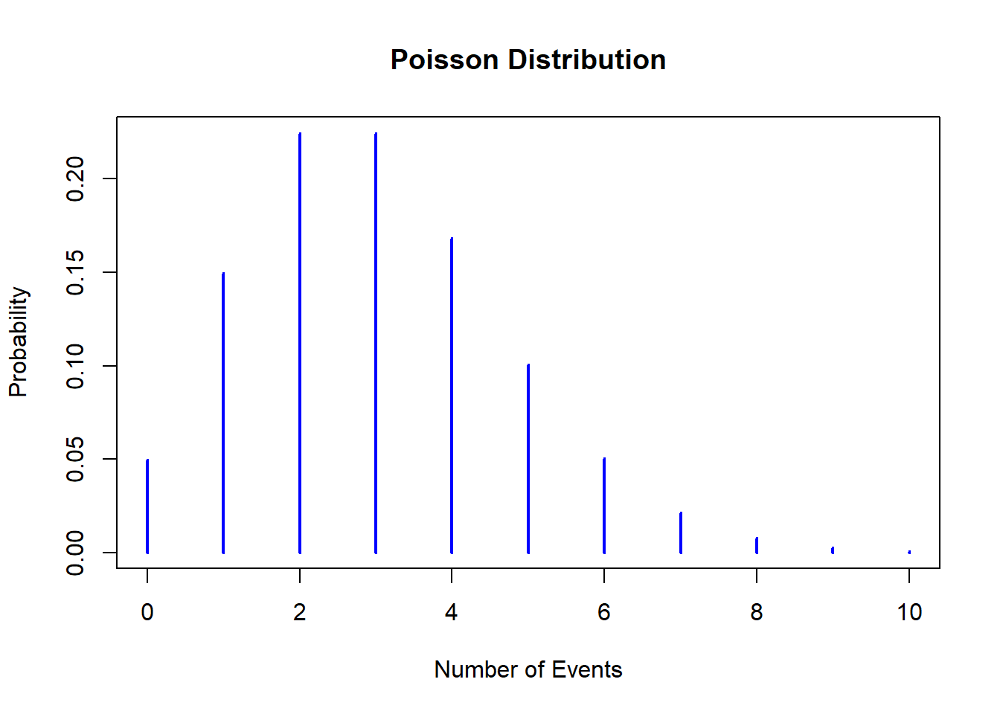

# 시간당 평균 3건의 사건이 발생하는 시스템
# 확률밀도함수: 특정 시간에 5건의 사건이 발생할 확률 계산
dpois(5, 3)[1] 0.1008188# 누적분포함수: 특정 시간에 최대 2건의 사건이 발생할 확률 계산
ppois(2, 3)[1] 0.4231901# 분위수 함수: 90%의 확률로 발생할 수 있는 최대 사건 수
qpois(0.90, 3)[1] 5# 랜덤 샘플링: 5개의 무작위 시간에 발생할 사건 수를 시뮬레이션
rpois(5, 3)[1] 3 1 5 2 3# 포아송분포의 확률질량함수 그리기
lambda <- 3 # 매개변수(평균 발생 횟수) 설정
x_values <- 0:10 # 확률을 계산할 이벤트 수의 범위
probabilities <- dpois(x_values, lambda) # 확률 질량 함수 계산
plot(x_values, probabilities, type = "h", lwd = 2, col = "blue",
main = "Poisson Distribution",
xlab = "Number of Events", ylab = "Probability") # 확률 분포 그래프 그리기